Forests do not appear all at once. On bare ground, grasses and gorse arrive first; then trees that love the sun, like birch and pine; and, slowly, under their shade, the trees that can wait in the dark take over. A storm or a fire opens a clearing and the story starts again there. The flora plugin plays that story, year by year, for every species you give it, wherever the climate and the land let it live.
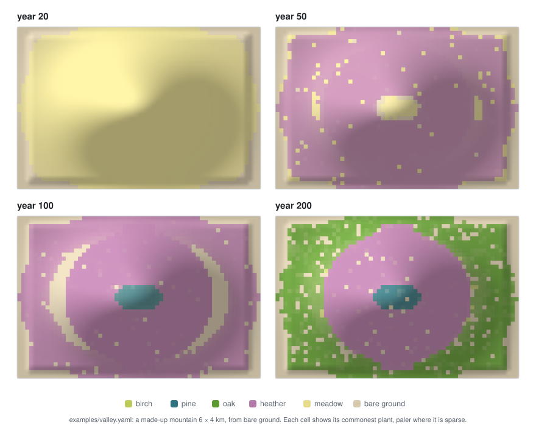
It knows nothing about any world: the species, their traits and their habitats come from the scenario. This page explains what happens in each cell, every year.
The pictures on this page come from real runs of the plugin, drawn in 2D from the fields it published: the example mountain, and small made-up fields that show one thing each (how they were made).
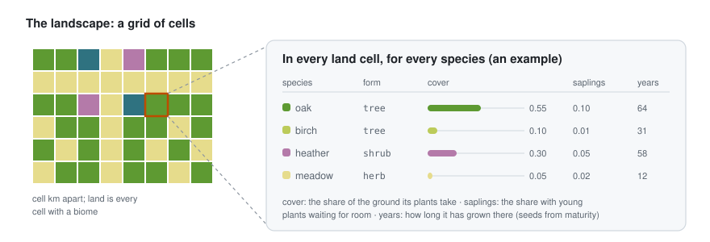
The landscape is a grid over the climate’s extent, with cells of cell km (default: the
temperature field’s). At the start the plugin samples, at every cell centre, the fields of the
world: temperature and precipitation (from the climate plugin), elevation and slope (from
the terrain plugin) bilinearly, and biome by the nearest cell. Land is every cell with a biome
(or above sea level when there is no biome field). The names of the biomes come from the climate’s
biomes event.
In every land cell, every species has:
A species’ habitat is an envelope over the facts of a cell (bioclimatic envelope models, Busby 1991), written like go-simulator’s conditions:
habitat:
temperature: {min: 9, max: 18} # °C, the yearly mean
precipitation: {min: 900} # mm a year
elevation: {max: 1500} # metres
slope: {max: 0.8} # rise over run
biome: [riverbank] # one of the climate's biomes
distance_to_old_oak: {max: 60} # metres from an anchor of the rules file
Inside every range the habitat suits the species fully. Past an edge it fades linearly to nothing
over the fact’s softness (softness: {temperature: 1.5, precipitation: 150, slope: 0.1,
distance: 40}, in each fact’s unit; without one, the edge is hard). Values that are not ranges
hold or not. The suitability of a cell is the product of every fact’s: 1 where everything suits,
0 where anything is out of reach. It is worked out once, at the start.
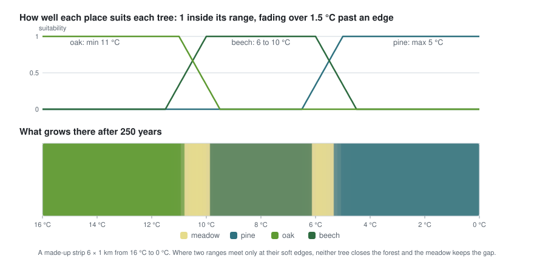
A made-up strip from 16 °C in the west to 0 °C in the east. Each tree grows where its range is; a plant dies faster where the habitat suits it only in part, so where two ranges meet only at their soft edges neither tree closes the forest, and the meadow keeps the gap.
Light is what plants compete for. Every species has a form: tree, shrub or herb. Trees shade shrubs, shrubs shade herbs.
1 − 0.9 × min(1, their cover).need = (5 − tolerance) / 4 × 0.8,
so tolerance 5 grows in deep shade and tolerance 1 needs 80 % of full light. With some light it
keeps (light − need) / (1 − need) of its growth, none below what it needs.
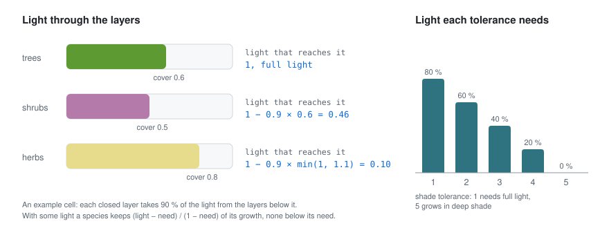
This is the heart of the model. For every land cell and species, from the state at the start of the year:
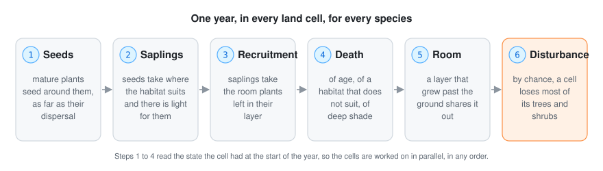
maturity years in the cell) spread seeds around them
with a Gaussian kernel as wide as their dispersal (metres); background_seeds reach every
cell from far away (birds, storms). Species with spreads: false never seed.saplings += growth × seeds × suitability × (light in gaps + light under plants) × (1 − saplings);
then 10 % of the saplings die waiting, more where the habitat does not suit.
recruited = min(saplings, growth × saplings × room × suitability × light from above).1 / longevity a year), of a habitat that does not suit them
(up to 20 % a year) and of shade too deep for them (up to 10 % a year).disturbance.chance a year, a cell loses severity of its trees and
shrubs (windthrow, fire) and they start again; herbs and saplings stay.Seeds only come from mature plants, and they land around them as far as the species’ dispersal.
Every plant that grows from them bears seeds in its turn once it is mature, so a species advances
as a front, faster the farther its seeds fly and the sooner it matures.
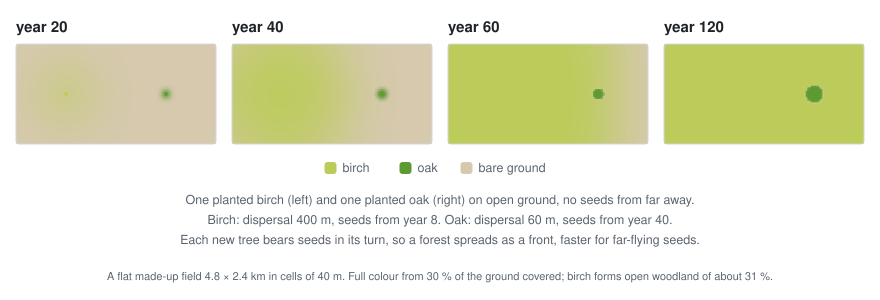
Birch (dispersal 400 m, seeds from year 8) against oak (60 m, from year 40), from one planted tree each, with no seeds from far away. Birch, which needs full light, only fills about a third of the ground: it regenerates only where its own cover leaves enough light.
So pioneers that need full light take open ground first and cannot follow themselves under their own shade, while shade-tolerant species waiting below take over as the pioneers age: succession. Frequent disturbances keep the pioneers in the landscape; rare ones let the tolerant species close the forest. A light-demanding species forms open woodland, because it only regenerates where its own cover leaves enough light.
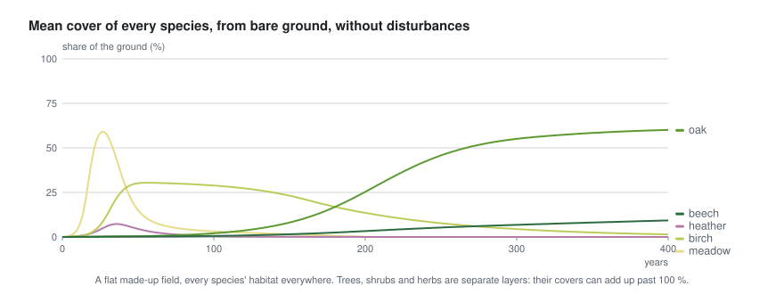
A made-up field where every species could live everywhere, from bare ground and without disturbances: meadow, then birch, then oak; beech, the most shade-tolerant and slowest, is still spreading at year 400.
The same story on a larger made-up island, with more species:
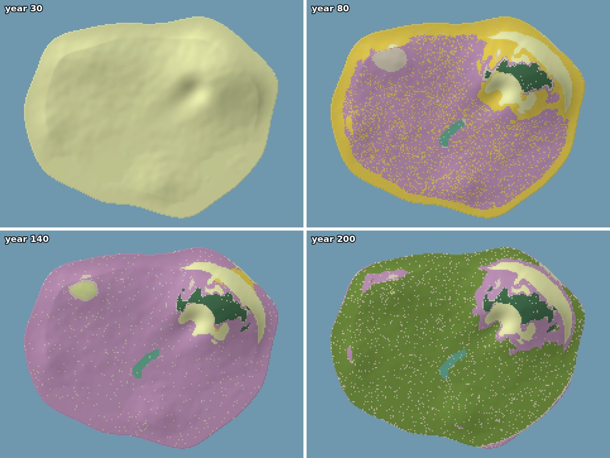
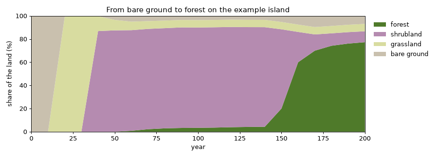
The example island from bare ground: grassland, then a long time of shrubland, and finally the forest closes after about 150 years.
Every year each cell has disturbance.chance of losing severity (default 0.8) of its trees and
shrubs, as after windthrow or a fire. The cleared ground gets nearly full light, so the pioneers
come back there first.
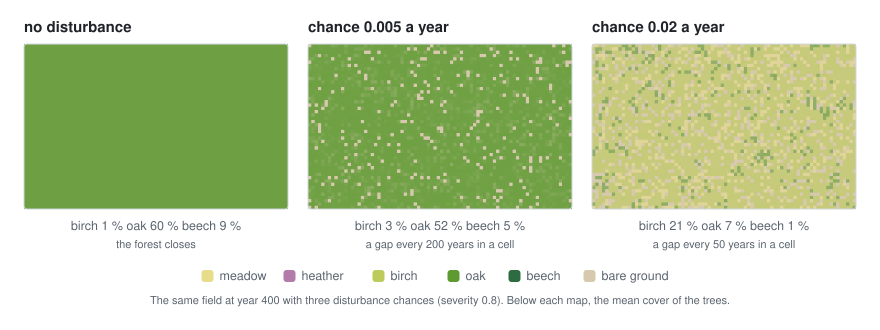
The field of the succession chart at year 400 with three disturbance chances. With a gap every 200 years in a cell the oak still holds the forest; with one every 50 years, birch and meadow mark most of it.
Anchors of the rules file take part in two ways:
role: plant, properties: {species, crown}): a fixed plant, such as an old tree
the story names. Its species covers the cells within crown metres of it or, when the crown is
smaller than a cell, the share of the cell under it; the other species of its layer make room.
It is mature from the start and stays every year.role: region, an outline): areas the indicators measure.Any anchor can be used in habitats as distance_to_<anchor id>, in metres, for plants that grow
near something.
Land people keep, such as fields and orchards: where its condition holds (written like a habitat, without soft edges), only the listed forms grow.
managed:
- {where: {biome: [fields]}, forms: [herb]}
- {where: {distance_to_old_oak: {max: 120}}, forms: [herb]} # a clearing round a tree
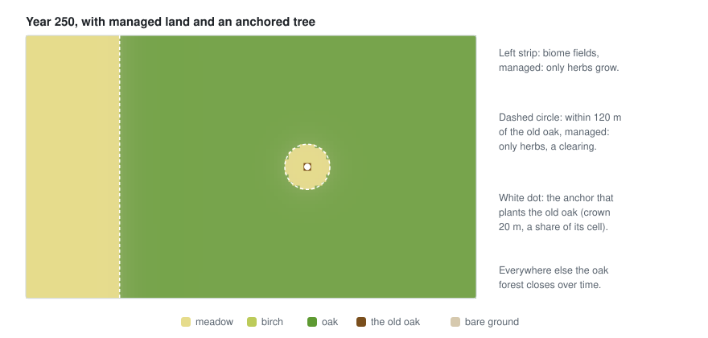
The two managed lands above on a made-up field of 2.4 × 1.4 km in cells of 20 m, with an anchor that plants an old oak: herbs keep the fields and the clearing, and the forest closes everywhere else.
| Output | When | Content |
|---|---|---|
event vegetation |
start | names, labels, forms, heights of the species |
field vegetation |
start and every publish_every years |
the species that most marks every cell: the commonest tree where tree cover reaches 0.3, else the commonest shrub where shrubs reach 0.3, else the commonest herb where herbs reach 0.2; −1 for bare ground |
fields tree_cover, shrub_cover, herb_cover |
the same | share of the ground under each layer |
fields cover_<id> |
the same, with species_fields: true |
cover of every species |
event vegetation_indicators |
the listed years |
hectares of every species; hectares of forest, shrubland, grassland and bare ground; for every region, its forest share and its commonest species |
Put the stage’s snapshots at multiples of publish_every, and keep only the fields worth saving
with snapshot_fields: a large landscape’s fields take megabytes each.
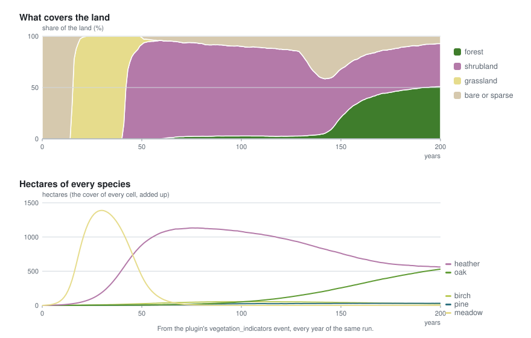
The same seed gives the same landscape: the chance of a disturbance comes from a hash of the seed, the year and the cell, so cells can be worked on in parallel in any order. Cells are spread over the processors. A landscape of about 700,000 land cells and 18 species takes about a third of a second a year.
vegetation field as a layer, as it does with biomes.seasons rule.go test ./...
The tests grow synthetic landscapes and check what must hold anywhere: every species within its habitat, pioneers followed by shade-tolerant trees, disturbances keeping pioneers, anchored plants staying (and small crowns covering their share of a cell), managed land keeping forms out, soft habitat edges, and the same seed giving the same landscape.